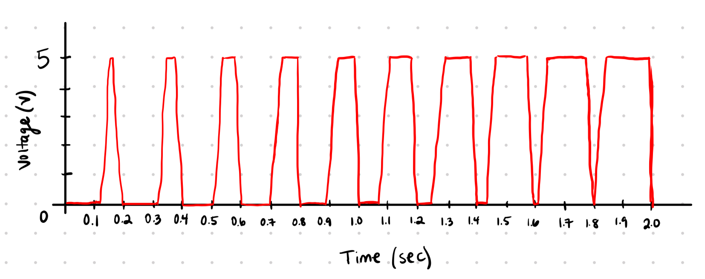

Overview
I created schematics (below) for two components: a capacitive sensor and a
servo motor. Both of these require libraries! For the capacitive sensor, it
receives a signal through pin 2,
which is routed through a 1 megaohm resistor to pin 4. When you touch a metal
object (connected through an alligator clip), it triggers a change in
capacitance, sending a signal back to the system that it can read from (which
will decide when the servo will change positions). The 1 megaohm resistor is
needed (standard) for absolute touch on the object to activate a signal.
Meanwhile, the servo motor receives power and a pulse signal from pin 9, and
connects to ground.

Schematics for a capacitive sensor and a servo
Building the Circuit
I brought the schematic to life, connecting my LEDs to pin 9 and 10. The joystick
is on its own. It grabs power from 5V and connects to ground. VRx and VRy read from
analog pins A0 and A1. Lastly, SW on the joystick is the switch, which functions by
outputting a digital signal if the joystick is moved. This is connected to digital
pin 3.

Circuit of a capacitive sensor and a servo
Coding the Firmware
I coded the firmware in an .ino file to implement a circuit where as soon as the
sensor reads that the metal object has been directly touched, the servo motor
position turns 180 degrees. It stays unmoving at 0 degrees otherwise.
I used the serial monitor to read the sensor values and test what value would be
best to use as the threshhold value for the system to know the metal object was
touched. Realizing that at neutral/sitting/no-touching the sensor value is less
than 100 and that touching the object brings it up to around 2000, I set the touch
threshhold value to be at 1000. So the servo motor only changes position if that it
senses the threshhold value or above it.
// adding libraries for the capacitive sensor and servo
#include
#include
// initializing capacitive sensor
CapacitiveSensor cs_4_2 = CapacitiveSensor(4, 2); // input from pin 2 to pin 4
// initializing and defining servo
Servo myservo;
// threshhold to know when the metal object has been touched (based on serial monitor readings)
const int TOUCH_THRESHOLD = 1000;
void setup() {
// beginning serial monitor
Serial.begin(9600);
//attaching servo to pin 9
myservo.attach(9);
}
void loop() {
// reads the sensor to see if the metal object was touched
long touch = cs_4_2.capacitiveSensor(30); // takes 30 readings and returns sum of the results
// printing raw sensor values for debugging
Serial.print("Sensor Value: ");
Serial.println(touch);
// delay for stability
delay(10);
// if touched, the servo motor updates position
if (touch > TOUCH_THRESHOLD) {
// servo updates position to 180 degrees
myservo.write(180);
// if not touched, the servo motors is unmoving or goes back to 0
} else {
// servo motor updates or stays at position of 0 degrees
myservo.write(0);
}
// delay for stability
delay(50);
}
Here is the final output operation! As you can see, every time I touch the
metal object, the servo arm's position turns 180 degrees. And it comes right
back to 0 once my finger is not on the object anymore. Yes, I had the motor
turn left so I guess you can say it's turning to -180 degrees.

Additional Questions
1. Say you are using a servo motor you attach to pin 9. In your loop() you have the following code:
for (int i=0, i<180, i++){servo.write(i); delay(100);}
Draw a graph
with the X axis in seconds, for two seconds, and the y-axis the voltage at pin 9 with respect to
ground.
Pin 9 sends the PWM (pulse width modulation) signal to the servo, and the width of
the signal determines the servo's position. It varies between 1 ms and 2 ms and the
voltage alternates between 0V and 5V. For a fixed period of 20 ms, the pulse width
increases from 1ms to 20ms. As the voltage oscillates between 0V and 5V, the amount
of time the signal is at 5V gradually increases while the amount of time that the
signal is at 0V gradually decreases. The PWM signal changes to control the servo's
position.

2. Your input device is slightly broken, leading it to give us an erroneous reading
1% of the time. How can we address this? Answer in (pseudo)code.
// defining constants for calibration, which will be done by taking 10 readings and calculating the average
const int NUM_READINGS = 10; // averaging from this number of readings
long readings[NUM_READINGS]; // array for storing readings
int readIndex = 0; // index for current reading
long total = 0; // total sum of the readings
long average = 0; // average value of the readings
void setup() {
// beginning serial monitor
Serial.begin(9600);
//attaching servo to pin 9
myservo.attach(9);
// initializing readings array
for (int i = 0; i < NUM_READINGS; i++) {
readings[i] = 0; // starting with zero
}
}
void loop() {
// reads the sensor to see if the metal object was touched
long touch = cs_4_2.capacitiveSensor(30); // takes 30 readings and returns sum of the results
// subtract the last reading from the total
total -= readings[readIndex];
// add the new reading to the total
readings[readIndex] = touch;
total += readings[readIndex];
// move to the next index
readIndex = (readIndex + 1) % NUM_READINGS;
// calculating the average of all readings = new filtered sensor value
average = total / NUM_READINGS;
// printing filtered sensor value for debugging
Serial.print("Filtered Sensor Value: ");
Serial.println(average);
// filtered value determines if touch threshhold was reached and servo motor can go
if (average > TOUCH_THRESHOLD) {
// servo motor updates position to 180 degrees
myservo.write(180);
} else {
// servo motor updates or stays at position of 0 degrees
myservo.write(0);
}
// delay for stability
delay(50);
}
3. Your input device is slightly noisy, leading the measurement to randomly deviate
from the true measurement up or down by 10%. How can we address this? Answer in
(pseudo)code.
// defining constants for smoothing, using the exponential moving average strategy
const float ALPHA = 0.1; // smoothing factor (between 0 and 1)
long smoothedValue = 0; // stores filtered value
void setup() {
// beginning serial monitor
Serial.begin(9600);
//attaching servo to pin 9
myservo.attach(9);
// initialize smoothed value with an initial sensor reading
smoothedValue = cs_4_2.capacitiveSensor(30);
}
void loop() {
// reads the raw sensor value to see if the metal object was touched
long raw = cs_4_2.capacitiveSensor(30); // takes 30 readings and returns sum of the results
// apply exponential moving average strategy
smoothedValue = (ALPHA * raw) + ((1 - ALPHA) * smoothedValue);
// printing filtered sensor value for debugging
Serial.print("Smoothed Sensor Value: ");
Serial.println(smoothedValue);
// smoothed value determines if touch threshhold was reached and servo motor can go
if (smoothedValue > TOUCH_THRESHOLD) {
// servo motor updates position to 180 degrees
myservo.write(180);
} else {
// servo motor updates or stays at position of 0 degrees
myservo.write(0);
}
// delay for stability
delay(50);
}